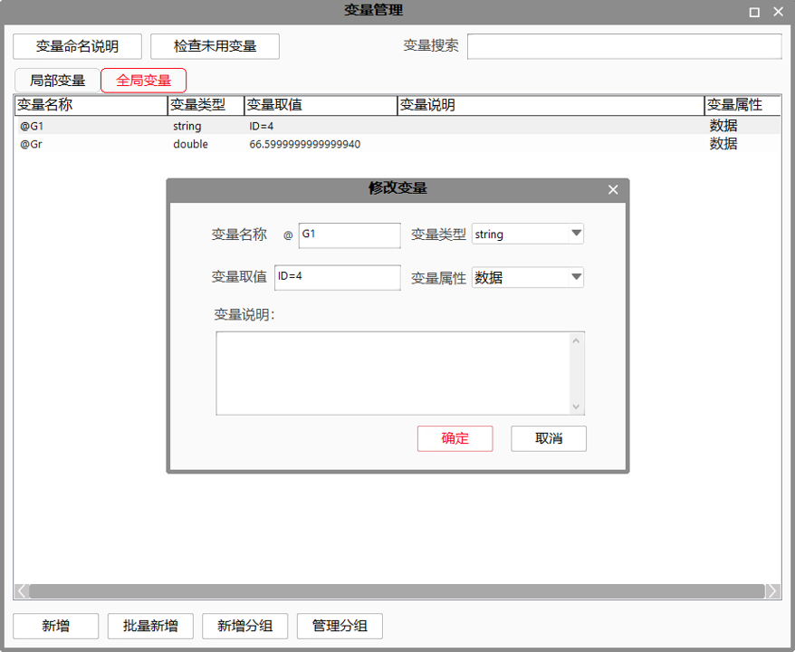
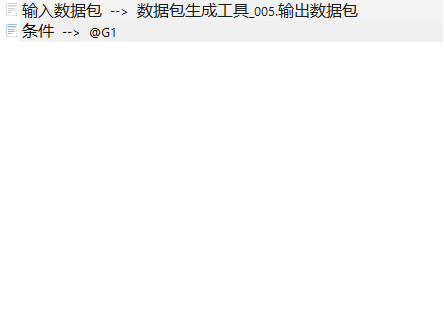

更新与之相连数据库表中的一行或者是多行，可以对某一列或者多列进行更新，通常将数据包生成工具与数据库更新工具一起使用。
| 分类 | 参数名称 | 参数描述 |
|---|---|---|
| 属性窗口 | 目标表名称 | 需要更新的数据库里面表的名称。 |
| 更新数据个数 | 更新表里面列的个数。温馨提示：数据包最多支持64个数据，所以列的个数最好不要超过64个。 | |
| 更新列名称 | 列的个数最多支持64个，可以根据实际情况自由选择，参看上面一条。 | |
| 图像窗口 | 无 | 无 |
| 数据链 | 输入数据包 | 更新的列数据可能是一个或者多个，所以使用“数据包生成工具”里面的输出作为更新的（多个）数值。 |
| 条件 | 和“数据查询工具”查询条件一个意思。通常使用新建字符串变量作为查询条件。 | |
| 高级界面 | 无 | 无 |
| 分类 | 参数名称 | 参数描述 |
|---|---|---|
| 监视窗口 | 执行结果 | 工具执行结果。 |
| 执行时间 | 工具执行时间。 | |
| 图像窗口 | 无 | 无 |
| 数据链 | 无 | 无 |
无
数据库更新和数据库查询都是需要连接数据库的。更新是对满足条件的记录进行数据的更改，记录可以是一条或者多条记录，这个是由（查询）条件决定，关于多查询条件的使用方法可以参考数据库查询工具里面的注意事项。见图1（查询）条件的设计。图2数据链的连接。
对列进行更新最好不要对ID进行更新，因为这个是区分数据记录的唯一标识。
对于多列进行更新的情况下，每一列的数据类型与数据包生成工具的相对应输出数据的类型要一致，这样是为了保证数据库更新结果的正确。比如第三个列的数据类型是double的，那么数据包生成工具的第三个输出也应该是double类型的，如果是bool类型的就会有问题的。
关于属性界面的设置可以参考数据查询工具。


参见“\Samples\数据库相关工具.gvp”。